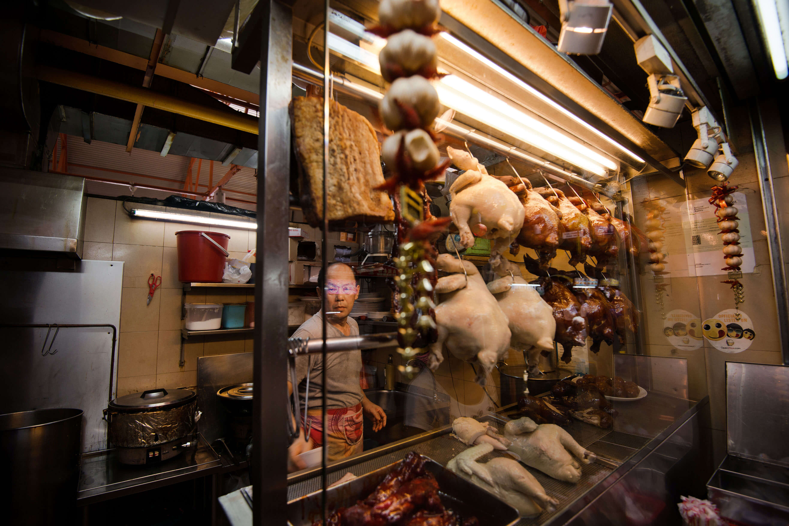

Eat
Hawker Culture
 Up to 3 hours
Up to 3 hours
Hawker culture is integral to the Singaporean identity. After all, hawker centres are communal dining spots where the locals congregate. This is where Singaporeans savour recipes perfected over generations. On top of everything, a meal at a hawker centre is generally known to be affordable and easy on the wallet, and the sheer diversity of cuisines available is guaranteed to please even the fussiest of eaters.
Highlights
- East Coast Lagoon Food Village is a breezy beachfront hawker centre where you can get seafood and local delights like satay (grilled skewered meat)
- Tiong Bahru Market regularly attracts long queues during weekends with its prime location in one of Singapore’s hippest ‘hoods
- Chinatown Complex Market & Food Centre is home to the world’s cheapest Michelin-starred meal, among other famous stalls
Step inside any hawker centre and prepare for your senses to be assaulted by all sorts of seductive smells and the frenzied cooking of mouth-watering dishes. Hawker centres are a melting pot of Singapore’s different cultures, and here you’ll find endless rows of stalls selling a dizzying array of local cuisines.
However, the open-air food complexes you see today were not always the norm. In the mid-1800s, street hawkers dominated the streets of Singapore. Back then, there weren’t enough eating houses in the city to feed office workers and the coolies (also known as labourers) who worked along the harbour. That meant city streets became popular spots for street hawkers to sell their food via pushcarts as there was a huge demand for cooked meals. In the ‘70s, the government decided that hawkers would be cleared off the streets and transferred to hawker centres where they could work in clean and hygienic stalls.
Today, hawker centres can be found all over Singapore, from the Central Business District (CBD) to far-flung
heartland areas.
A popular place is
East Coast Lagoon Food Village,
a breezy beachfront hawker centre in eastern Singapore where you can sample all sorts of local delights. Drop by Stingray Forever BBQ Seafood and try their sambal stingray (sambal is a spicy Indonesian chilli paste). Dip the moist stingray flesh in cincalok (shrimp sauce fermented with rice and salt) and you’re all set to go. Pair your seafood with some satay (grilled skewered meat) from Haron Satay 55 and don’t be shy when it comes to dipping each skewer in the peanut sauce.
Another great spot is
Bedok 85 Market Fengshan Centre.
Like East Coast Lagoon Food Village, you can get excellent seafood, satay, and chicken wings here. Other must-try stalls include Xing Ji Rou Cuo Mian and Seng Hiang Bak Chor Mee, two rival stalls that whip up mean bowls of bak chor mee (noodles with minced pork meat), as well as Ah Balling Peanut Soup, where you can try peanut or almond milk soup with paste-stuffed rice balls.
A little closer to townis
Tiong Bahru Market.
Do yourself a favour and try the chwee kueh (steamed rice cakes with preserved radish) from Jian Bo Shui Kueh, as well as the rojak (a sweet and spicy salad dish) from Tow Kwar Pop. You can also enjoy delicious Hokkien mee (fried prawn noodles) from Hong Heng Fried Sotong Prawn Mee, a stall that was awarded a Michelin Bib Gourmand in 2019.
Maxwell Food Centre
is slightly touristy, but the stalls here are a hot favourite of office workers in the vicinity. An immensely popular stall is Tian Tian Hainanese Chicken Rice. Join the snaking queues to taste chicken rice endorsed by the late Anthony Bourdain as well as celebrity chef Gordon Ramsay. Here, you can also try homely Eurasian cuisine from Popo & Nana’s Delights, as well as hard-to-find fried oyster cakes from Maxwell Fuzhou Oyster Cakes.
Lastly, there’s
Chinatown Complex Market & Food Centre,
the home of Liao Fan Hawker Chan, which serves the world’s cheapest Michelin-starred meal. Another Michelin-recommended stall is Zhong Guo La Mian Xiao Long Bao, where you can try all sorts of dumplings, while the brave can go for Jin Ji Teochew Braised Duck & Kway Chap – try the kway chap (flat noodles with pig offals). Smith Street Taps also has craft beers on tap if you need a pint or two.
Insider Tips
- Hawker centres can get busy especially during peak hours and you might see packets of tissue paper, name cards, or even umbrellas on tables or seats. That means the spot has already been ‘choped’ (the Singlish slang for reserving seats in advance), so it’s good etiquette to find another seat or to ask if you can share the space.